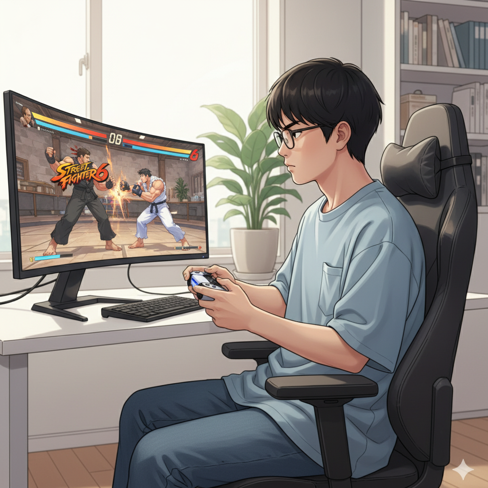
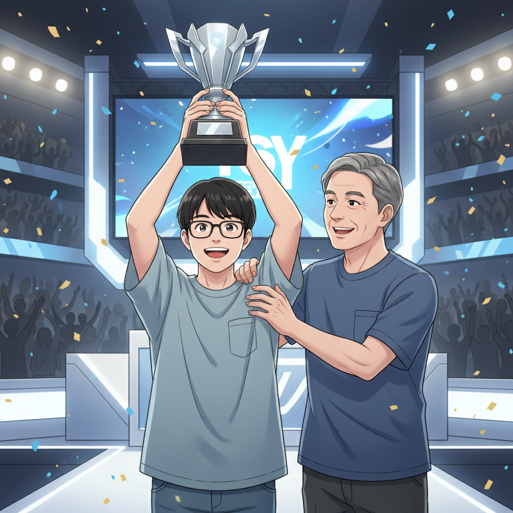
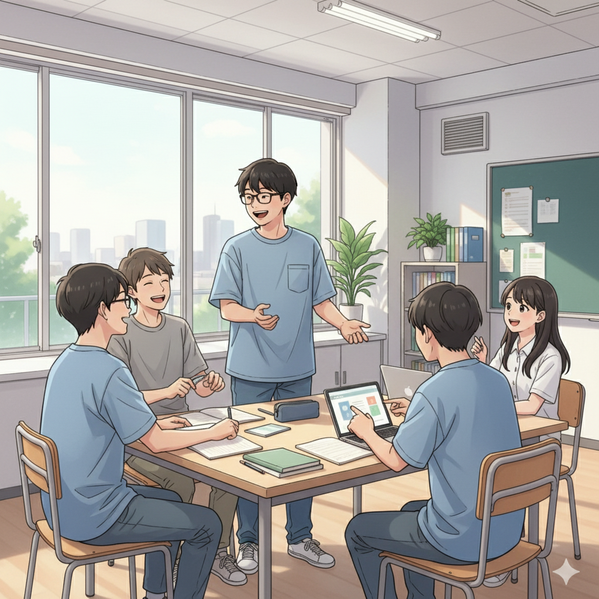
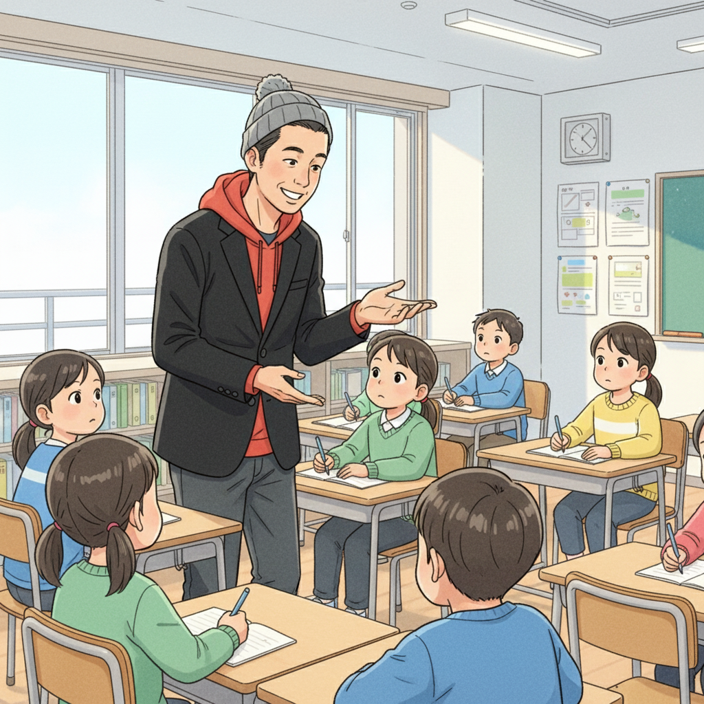

SF6との出会い、そしてif塾との運命的な出会い (Y君)

「ストリートファイター6（SF6）」を始めたのは、高校に入ってすぐの頃でした。最初は友達とワイワイ楽しむ程度でしたが、技のコンボを覚えたり、対戦で勝てるようになっていくうちに、どんどんのめり込んでいきました。気がつけば、毎日何時間も練習するようになっていました。
そんな時、高校の先生から「if塾」を紹介してもらったんです。最初は正直、塾に通うのは気が進みませんでした。でも、塾頭先生との面談で、僕の集中力や反応速度といった発達特性をSF6のようなeスポーツで活かせる可能性があることを教えてもらい、興味を持つようになりました。
if塾では、SF6の技術指導だけでなく、集中力を高めるためのトレーニングや、対戦相手の心理を読むための分析力など、様々なことを学びました。特に、自分の得意な部分を伸ばすことに焦点を当てた指導は、僕にとって大きな自信になりました。
集中力と反応速度が武器に！大会での成功体験 (Y君, 塾頭)

if塾で学び始めてから、SF6の腕は格段に上達しました。以前は勝てなかった相手にも勝てるようになり、自信を持って大会に臨めるようになりました。
初めて出場した大会では、緊張で手が震えましたが、塾頭先生から教えてもらった深呼吸法を試したところ、落ち着いてプレイすることができました。集中力を維持し、相手の動きを的確に捉えることができ、順調に勝ち進むことができました。結果、なんと優勝することができたんです！
優勝した瞬間は、信じられない気持ちでした。これまで努力してきたことが報われた気がして、本当に嬉しかったです。if塾の仲間たちや塾頭先生も、自分のことのように喜んでくれました。この成功体験を通して、僕はさらにSF6に情熱を注ぐようになりました。
塾頭は言います。「Y君の集中力と反応速度は、まさにeスポーツ向きの才能。それをSF6という舞台で開花させたのは、彼の努力の賜物です。if塾では、Y君のように、自分の特性を活かして活躍できる子どもたちを応援しています。」
eスポーツを通して学んだこと、そして未来への希望 (Y君, 塾長)

SF6を通して、僕は技術だけでなく、多くのことを学びました。目標に向かって努力することの大切さ、困難に立ち向かう勇気、そして仲間との絆。これらの経験は、僕の人生を大きく変えました。
以前の僕は、自分の発達特性にコンプレックスを感じていました。でも、if塾で自分の特性を活かせることを見つけ、成功体験を重ねることで、自信を持つことができるようになりました。
塾長もまた、発達特性を持つ一人として、Y君の成長を心から応援しています。「私も中学時代は特別支援学級に通っていましたが、高校で塾頭先生に出会い、自分の才能に気づくことができました。Y君のように、自分の特性を活かして輝ける子どもたちが、if塾からどんどん生まれてほしいと思っています。」
今、僕はプロのeスポーツプレイヤーを目指して、日々練習に励んでいます。将来は、世界大会で活躍できる選手になりたいと思っています。そして、僕と同じように、自分の特性に悩んでいる子どもたちに、希望を与えられるような存在になりたいです。
発達障害は才能の原石！if塾で自分らしい成長を (塾頭)

if塾では、発達特性を「障害」ではなく「才能」と捉え、子どもたちの可能性を最大限に引き出すためのサポートを行っています。ASD ICT教育を通して、それぞれの個性に合わせた学びを提供し、得意なことを伸ばし、苦手なことを克服するための支援をしています。
Y君のように、eスポーツで才能を開花させる子どももいれば、プログラミングやデザインで才能を発揮する子どももいます。if塾では、子どもたちが自分の興味や才能を見つけ、自分らしい成長を遂げられるように、全力でサポートしていきます。
不安感が強く、自分に自信が持てない子どもたち、成功体験に乏しく、何をやってもうまくいかないと感じている子どもたち、ぜひ一度if塾に遊びに来てください。仲間との出会いが、あなたの人生を変えるかもしれません。
if塾は、発達特性を持つ子どもたちが、自分らしく輝ける場所です。
🎯 興味を持っていただいた方へ
if塾では、発達特性を持つ子どもたちの「好き」を「才能」に変える教育を行っています。現在の記事内容と実際の活動に大きなズレはありませんが、詳細については直接お問い合わせください。
📌 記事について
この記事は、塾頭による完全自動化への挑戦としてAIが自動生成しています。将来的には塾頭が執筆しているような記事になることを目指しており、現時点では事実と異なる内容が含まれる可能性があります。最新の正確な情報については、お問い合わせフォームよりご確認ください。
🤖 Generated with AI - if塾のブログ自動化プロジェクト